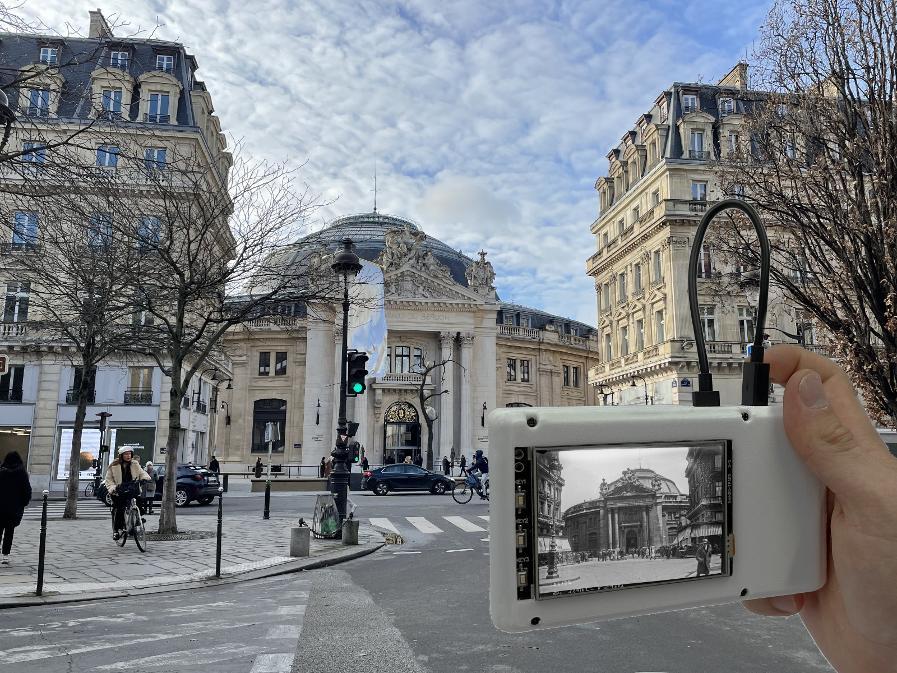

LEAD PROJECT
CHI 2026 SUBMISSION

Camera T-1: Tangible Geo-Archival Exploration
A handheld device designed to bridge individual and collective memory by allowing users to rediscover historical photographs of their current location in-situ.
Raspberry Pi 4
Python
Tkinter
Database